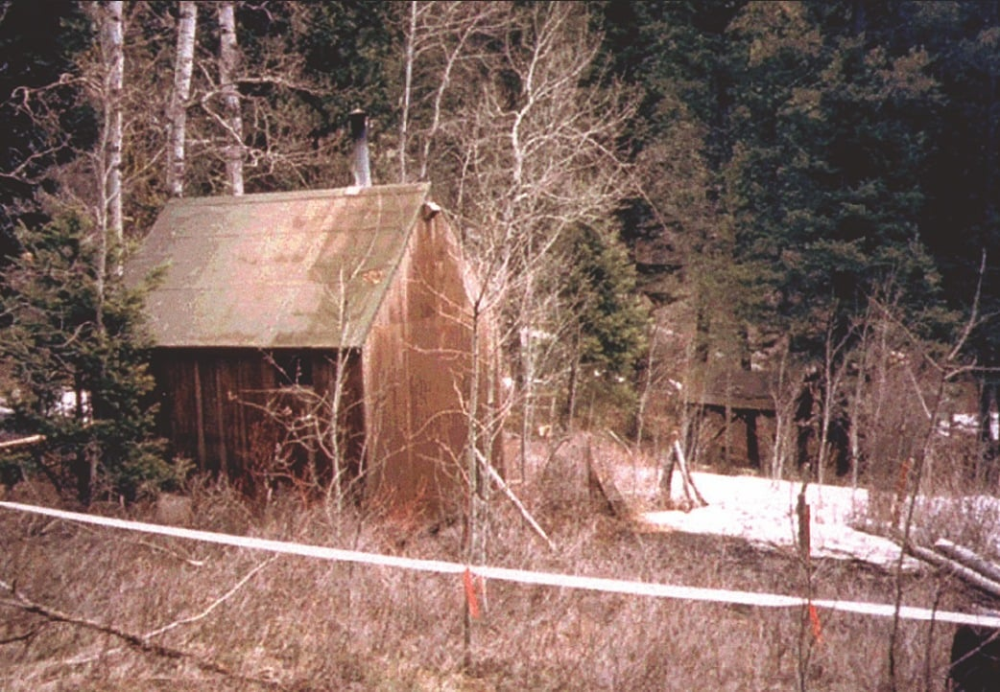

The Unabomber case
Ted Kaczynski (alias: Unabomber)
Ted Kaczynski, widely known as the Unabomber, was an American domestic terrorist responsible for a nationwide mail bombing campaign that lasted from 1978 to 1995. Over nearly two decades, his attacks targeted individuals associated with universities, airlines, and modern technology industries. His eventual identification and arrest became one of the most complex and unusual manhunts in FBI history.
Background
Born in 1942 in Chicago, Illinois, Theodore Kaczynski was considered academically gifted from a young age. He later became a mathematics professor but eventually withdrew from academic life and moved to a remote cabin in Montana. Over time, he developed strongly anti-industrial and anti-technology views, which he later articulated in a lengthy manifesto.
Beginning in 1978, a series of mail bombs began appearing across the United States. Because early targets included universities and airlines, investigators coined the name “Unabomber,” derived from UNiversity and Airline BOMber.
The Manhunt
For many years, the Unabomber case frustrated investigators. The attacks were spread across multiple states, the devices were carefully constructed and the suspect left very little forensic evidence. The FBI conducted one of the longest and most expensive investigations in its history, relying heavily on behavioral profiling and forensic analysis.
A major turning point came in 1995, when the Unabomber sent a lengthy manifesto to major newspapers, demanding its publication. After the document was made public, the writing style caught the attention of David Kaczynski, the suspect's brother, who recognized similarities in language and ideology.
This linguistic connection provided the critical lead investigators had been missing.
Discovery & Arrest

Acting on the tip, the FBI traced the suspect to a remote one-room cabin near Lincoln, Montana. On April 3 1996, federal agents executed a search warrant at the property.
Inside the small wooden structure, investigators discovered bomb-making materials, detailed notes and the original manifesto draft. Ted Kaczynski was arrested at the scene without incident.
Images of the isolated Montana cabin quickly became one of the most recognizable symbols of the case, representing both the suspect's long period of evasion and the unusual nature of the investigation.
Aftermath
In 1998, Ted Kaczynski pleaded guilty to multiple federal charges and was sentenced to life imprisonment without the possibility of parole. The Unabomber case is frequently studied for its use of behavioral profiling, forensic linguistics, and long-term investigative coordination.
The case remains one of the most distinctive manhunts in modern U.S. law enforcement history due to its duration, investigative challenges and the unconventional path that ultimately led to the suspect's identification.